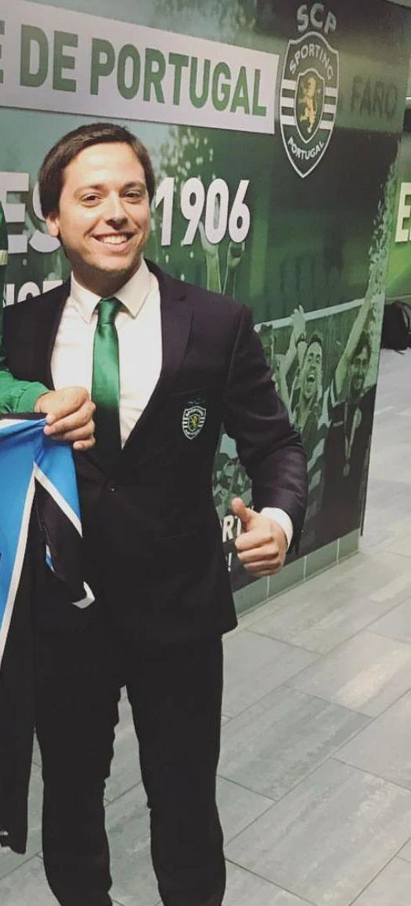
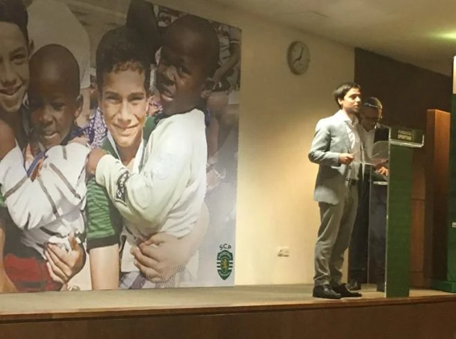
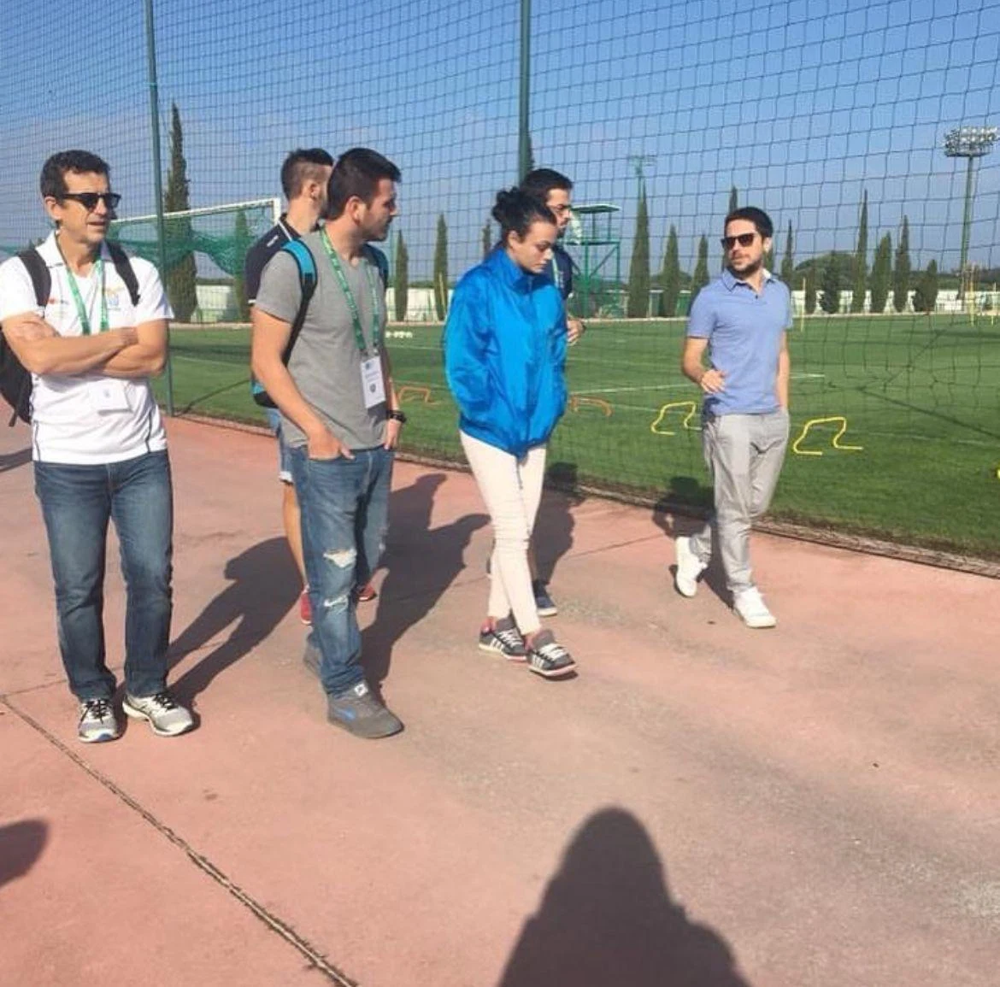

01 / Sporting CP · 2013–2018
Compreender o funcionamento de um grande clube.
No Sporting, conheci por dentro as diferentes áreas de um clube e a forma como se articulam. No apoio direto ao CEO, apoiei a reestruturação da academia nas áreas técnica, médica, de recrutamento, logística e serviços de apoio. Participei também na implementação do Sporting ISM, uma plataforma que integrava informação de scouting, treino, saúde e acompanhamento escolar.
Fui também o interlocutor do clube junto da UEFA para a organização de jogos da Liga dos Campeões e da Liga Europa, e diretor executivo da Fundação Sporting. Estas funções permitiram-me compreender a ligação entre a atividade desportiva, as responsabilidades institucionais e a relação com os adeptos e a comunidade.
Ver entrevista sobre a Fundação ↗- UEFA: interlocutor do clube na organização de jogos da Liga dos Campeões e da Liga Europa, entre 2014 e 2018.
- Sporting TV: mais de 350 participações como comentador, com contacto regular com a comunicação do clube e os temas que mobilizam os adeptos.
- Fundação Sporting: participação na consolidação institucional e na sustentabilidade financeira da Fundação, incluindo o seu reconhecimento junto de entidades governamentais e europeias.

